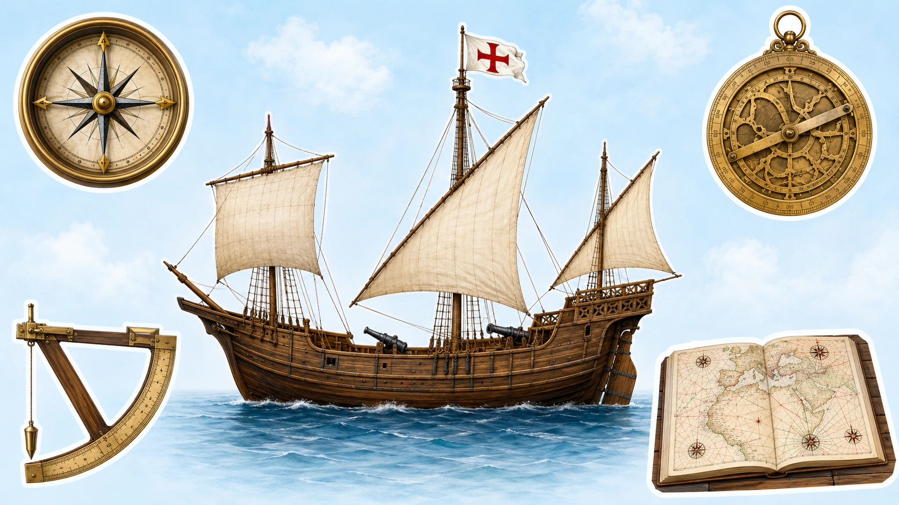
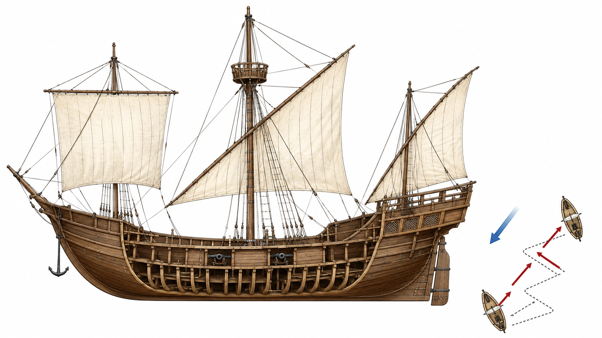
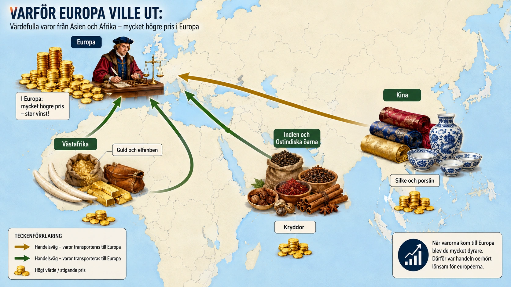
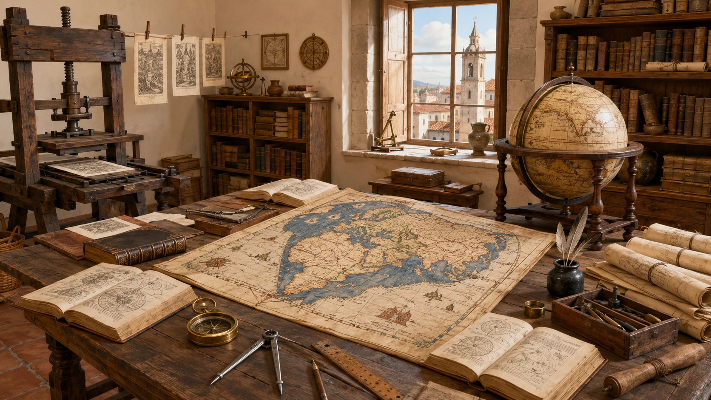
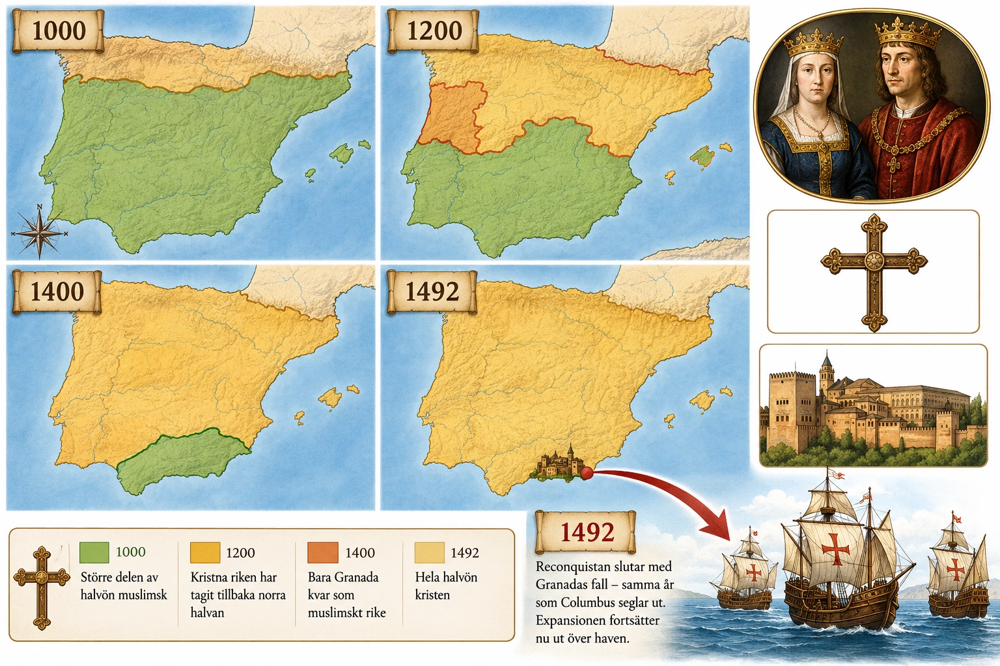
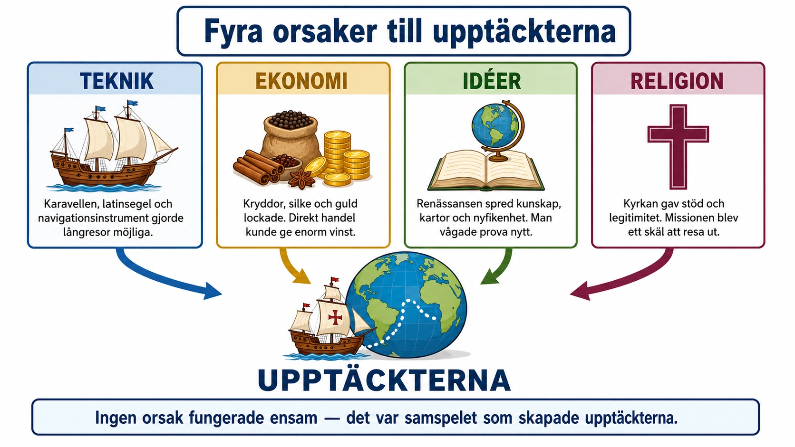

— fyra krafter bakom upptäcktsresorna —
Titta på bilden innan du läser vidare:

I §A har du sett vad som hände under upptäcktsresorna. Nu ska vi titta på varför det hände. Historiska händelser har ofta flera olika orsaker som samverkar. För upptäcktsresorna ska vi titta på fyra: teknik, ekonomi, nya idéer och religion. Varje orsak har sin egen text. Tänk på att de inte stod var och en för sig — de hängde ihop och förstärkte varandra.
Vi börjar med tekniken.
Upptäcktsresorna berodde inte bara på modiga sjömän. De blev också möjliga eftersom tekniken hade utvecklats. Fartyg, segel, kartor och navigation hade blivit bättre. Det gjorde att européer vågade segla längre ut på öppet hav än tidigare.
En viktig uppfinning var karavellen. Karavellen var ett fartyg som användes mycket av portugiserna när de utforskade Afrikas kust. Den var mindre och lättare än många äldre skepp, men ändå stark nog för längre resor. Den kunde segla på grunt vatten nära kuster, men också klara längre färder ute på Atlanten.
Karavellen hade också bättre styrförmåga än många äldre fartyg. Den var lättare att manövrera och kunde vända snabbare. Det var viktigt när man seglade nära okända kuster, där det kunde finnas sandbankar och klippor.
Seglen utvecklades också. Äldre fartyg var ofta bäst på att segla när vinden blåste bakifrån. Men med nya segeltyper, särskilt trekantiga latinsegel, kunde fartygen segla mer snett mot vinden. Det kallas att kryssa. Sjömännen kunde ta sig fram även när vinden kom från sidan eller delvis framifrån. Det gjorde resorna säkrare och mer flexibla.
Navigation betyder konsten att hitta rätt på havet. När sjömän seglade nära kusten kunde de känna igen berg, öar och hamnar. Men ute på öppet hav fanns inga sådana landmärken. Då behövde man andra metoder.
Sjöfarare lärde sig att använda stjärnorna. Genom att titta på Polstjärnan på norra halvklotet kunde de räkna ut ungefär hur långt norrut eller söderut de var.
Kompassen blev också mycket viktig. Med kompassen kunde sjömännen se väderstrecken även när solen inte syntes eller när vädret var dåligt. Den visade inte exakt var man var, men den hjälpte besättningen att hålla riktningen.
Kartorna blev bättre. Tidigare kartor kunde vara osäkra och fyllda med fel. Men ju fler resor som gjordes, desto mer kunskap samlades in. Kuster ritades av, öar markerades och avstånd blev mer korrekta. Varje resa gjorde nästa resa lättare.
Upptäcktsresorna blev möjliga genom flera tekniska förbättringar samtidigt: bättre fartyg, bättre segel, bättre navigation och bättre kartor.
I §A har du sett vad som hände under upptäcktsresorna. Nu ska vi titta på varför det hände. Historiska händelser har ofta flera olika orsaker som samverkar. För upptäcktsresorna ska vi titta på fyra: teknik, ekonomi, nya idéer och religion. Varje orsak har sin egen text. Tänk på att de inte stod var och en för sig — de hängde ihop och förstärkte varandra.
Vi börjar med tekniken.
Upptäcktsresorna under 1400- och 1500-talet berodde inte bara på modiga sjömän och kungar som ville bli rika. De blev också möjliga eftersom tekniken hade utvecklats. Fartyg, segel, kartor och navigation hade blivit bättre. Det gjorde att européer vågade segla längre ut på öppet hav än tidigare.
En viktig uppfinning var karavellen. Karavellen var ett fartyg som användes mycket av portugiserna när de utforskade Afrikas kust. Den var mindre och lättare än många äldre skepp, men ändå stark nog för längre resor. Den kunde segla på grunt vatten nära kuster, men också klara längre färder ute på Atlanten. Det gjorde den mycket användbar när sjöfarare skulle undersöka okända kuststräckor, flodmynningar och hamnar.
Karavellen hade också bättre styrförmåga än många äldre fartyg. Den var lättare att manövrera och kunde vända snabbare. Det var viktigt när man seglade nära okända kuster, där det kunde finnas sandbankar, klippor och farliga strömmar. Ett fartyg som var svårt att styra kunde lätt gå på grund eller krossas mot klippor.
En annan viktig teknisk faktor var utvecklingen av segel. Äldre fartyg var ofta bäst på att segla när vinden blåste bakifrån. Men med nya segeltyper, särskilt trekantiga latinsegel, kunde fartygen segla mer snett mot vinden. Det kallas att kryssa. Att kunna kryssa betydde att fartygen inte var lika beroende av att vinden blåste exakt åt rätt håll. Sjömännen kunde ta sig fram även när vinden kom från sidan eller delvis framifrån. Det gjorde resorna säkrare och mer flexibla.
Samtidigt blev fartygen bättre på att kombinera snabbhet och lastförmåga. Ett fartyg behövde kunna bära mat, vatten, handelsvaror, vapen och utrustning. Om man skulle segla långt behövdes stora förråd. Men ett fartyg som var för tungt kunde bli långsamt och svårt att styra. Därför var utvecklingen av fartyg en balans: de skulle vara tillräckligt stora för långa resor, men tillräckligt smidiga för att klara okända hav.
Navigationen utvecklades också. Navigation betyder konsten att hitta rätt på havet. När sjömän seglade nära kusten kunde de känna igen berg, öar, floder och hamnar. Men ute på öppet hav fanns inga sådana landmärken. Då behövde man andra metoder.
Sjöfarare lärde sig att använda stjärnorna för att förstå var de befann sig. Genom att titta på stjärnhimlen, särskilt Polstjärnan på norra halvklotet, kunde de räkna ut ungefär hur långt norrut eller söderut de var. Det gjorde det lättare att hålla rätt kurs under långa resor.
Kompassen blev också mycket viktig. Med kompassen kunde sjömännen se väderstrecken även när solen inte syntes eller när vädret var dåligt. Den visade inte exakt var man var, men den hjälpte besättningen att hålla riktningen. Tillsammans med stjärnorna gjorde kompassen det möjligt att segla längre bort från land.
Kartorna blev också bättre. Tidigare kartor kunde vara osäkra och fyllda med fel, särskilt när det gällde områden som européerna inte kände till. Men ju fler resor som gjordes, desto mer kunskap samlades in. Kuster ritades av, öar markerades och avstånd blev mer korrekta. Kartorna blev därför både ett resultat av upptäcktsresorna och ett hjälpmedel för nya resor.
Man kan säga att varje resa gjorde nästa resa lättare. När en sjöfarare hade hittat en ny kust, en havsström eller en bra hamn kunde andra använda den kunskapen senare. Tekniken och kunskapen växte steg för steg.
Upptäcktsresorna blev möjliga genom flera tekniska förbättringar samtidigt: bättre fartyg, bättre segel, bättre styrning, bättre navigation och bättre kartor. Utan dessa förändringar hade det varit mycket svårare för européerna att segla ut över Atlanten, längs Afrikas kust och senare vidare till Amerika och Asien.
En enkel orsakskedja: Bättre fartyg byggdes → seglen utvecklades → sjömän kunde kryssa och styra bättre → kompassen och stjärnorna hjälpte dem att hitta → kartorna blev mer användbara → längre resor över haven blev möjliga.

Det är lätt att tänka att upptäcktsresorna handlade om mod, vision och äventyrslust. Och visst — det krävdes mycket av allt detta. Men utan rätt verktyg hade inget av det räckt. En modig sjöman utan rätt skepp drunknade. En kunglig vision utan rätt karta hamnade fel.
Tekniken är därför en grundläggande orsak. Den är inte ensam tillräcklig — det krävdes också ekonomi, idéer och religion för att resorna skulle starta. Men utan tekniken hade inget annat hjälpt. Detta är något att komma ihåg när vi analyserar historiska händelser: olika orsaker spelar olika roller. Vissa är möjlighetsskapande (utan dem kan inget hända). Andra är drivande (de gör att något händer).
Tekniken hör till de möjlighetsskapande orsakerna. Den var grundförutsättningen.
Den portugisiska karavellen utvecklades under mitten av 1400-talet. Den var inte uppfunnen från grunden — den byggde på äldre skeppstyper från Medelhavet och från arabiska sjöfarare. Men portugiserna kombinerade flera idéer på ett nytt sätt.
Karavellen var relativt liten — ungefär 20–30 meter lång — och tillräckligt smidig för att kunna segla på floder och nära kuster. Det var viktigt när man utforskade okända Afrikas kust, där sjökorten saknades och faran för grundstötning var stor.
Men karavellen kunde också segla på öppet hav. Det berodde på dess speciella konstruktion. Skrovet var byggt så att det tog vatten väl. Masterna var höga nog för att hålla stora segel, men inte så höga att de skulle välta skeppet i stormar.
Det viktigaste med karavellen var dess segel. Den hade vanligtvis två eller tre master. På den första masten satt ett råsegel — ett fyrkantigt segel som var bra för medvind. På de andra masterna satt latinsegel — trekantiga segel som var bra för att kryssa mot vinden.
Detta kombinerade två segeltraditioner. Råseglet kom från nordeuropeiska skepp som hade utvecklats i Atlanten och Östersjön. Latinseglet kom från arabiska och medelhavskeppstyper. Karavellen tog det bästa från båda världarna.
Latinseglet är en av historiens viktigaste uppfinningar inom sjöfart, även om det inte är så känt idag. Det utvecklades troligen av arabiska sjöfarare i Indiska oceanen och Röda havet redan under tidig medeltid.
Ett vanligt fyrkantigt segel (råsegel) kan bara fånga vind som blåser från sidan eller bakifrån. Om vinden blåser rakt emot fartyget är det helt verkningslöst. Det betyder att ett fartyg med bara råsegel måste vänta på rätt vind för att komma fram.
Latinseglet är annorlunda. Det är trekantigt och fäst på en lång snedställd rå. Det kan fånga vind även när den blåser snett framifrån. Med ett latinsegel kan ett skepp segla i en zickzackbana — först åt höger med vinden från vänster, sedan åt vänster med vinden från höger. Det kallas att kryssa.
Att kryssa är långsammare än att segla med medvind. Men det betyder att fartyget kan komma fram även när vinden inte blåser åt rätt håll. För sjöfarare som ville utforska okända områden var det avgörande. Vinden gick inte alltid åt rätt håll. Med latinseglet kunde de ändå komma fram.
Att navigera ute på öppet hav krävde flera olika tekniker som tillsammans gav en hyfsad uppfattning om var skeppet var.
Latitud — hur långt norr eller söder. För att räkna ut latitud (avståndet från ekvatorn) använde sjöfarare astronomi. På norra halvklotet kunde de mäta vinkeln mellan Polstjärnan och horisonten. Polstjärnan står nästan stilla på himlen ovanför Nordpolen. Ju längre norrut man är, desto högre står den. Ju längre söderut, desto lägre.
För att mäta vinkeln användes ett instrument som hette astrolabium. Senare ersattes det av kvadranten och slutligen sextanten. Alla dessa instrument byggde på samma princip: mäta hur högt en himlakropp står över horisonten.
På södra halvklotet — dit portugiserna kom under sin afrikautforskning — kunde de inte använda Polstjärnan eftersom den inte syns där. Istället mätte de solens högsta punkt på dagen.
Longitud — hur långt öster eller väster. Detta var mycket svårare. För att räkna ut longitud behöver man veta exakt klockslag. Men på 1400-talet fanns det inga klockor som höll tiden tillräckligt exakt på sjön. Det betydde att sjöfarare bara kunde gissa hur långt öster eller väster de var. Detta är en av anledningarna till att Atlanten var så skrämmande att korsa — man kunde aldrig vara säker på exakt position.
Problemet med longitud löstes inte förrän i mitten av 1700-talet, när engelsmannen John Harrison byggde en klocka som höll tiden även på rörligt skepp. Men det är en annan historia, mer än 200 år senare.
Kompassen. Kompassen visar magnetisk nord. Den uppfanns i Kina och kom till Europa via arabvärlden under tidig medeltid. På 1400-talet var den en självklar del av sjöfartsutrustning. Kompassen gav sjöfararna en riktning även när solen och stjärnorna inte syntes — i mulet väder eller på natten. Den ersatte inte annan navigation, men den kompletterade den.
Kartor var inte bara hjälpmedel för sjöfart. De var också ett resultat av sjöfarten. Varje resa lade till ny information. När en kapten kom hem ritades hans observationer in på nya kartor.
Under 1400-talet utvecklades portolaner — sjökort med detaljerade kustlinjer, hamnar, sandbankar och farleder. Portolanerna ritades av specialister som arbetade i Medelhavets handelsstäder, särskilt i Italien och Mallorca. De var bland de mest avancerade kartorna i världen vid den tiden.
Men det fanns ett problem: portolanerna var handelshemligheter. De var dyra att producera och innehöll information som kunde ge en köpman eller stat fördelar. Portugiserna och spanjorerna höll sina nyaste sjökort hemliga från andra europeiska länder. När England, Frankrike och Nederländerna senare ville börja segla över Atlanten fick de börja från noll.
Detta är ett sätt på vilket tekniken hängde ihop med politik. Att äga kunskap var att äga makt.
Vad ska du ta med dig?
Tekniken bakom upptäcktsresorna var inte en enstaka uppfinning. Den var en kombination av många olika tekniker som hade utvecklats under hundratals år i olika delar av världen.
Ingen enskild person eller civilisation uppfann allt detta. Det var resultatet av tusentals år av handel, kunskapsutbyte och experiment. När portugiserna och spanjorerna kombinerade allt detta i mitten av 1400-talet skapade de förutsättningarna för upptäcktsresorna.
Detta är en viktig lärdom: stora historiska genombrott bygger ofta på kunskap från många olika håll. Européerna var inte ensamma om att uppfinna sjöfart. De var bra på att kombinera vad andra hade uppfunnit — och sedan använda det för sina egna syften.
Titta på kartan innan du läser vidare:

Upptäcktsresorna handlade inte bara om nyfikenhet och äventyr. En av de viktigaste orsakerna var ekonomi. Europeiska köpmän och furstar ville tjäna pengar. De ville hitta nya handelsvägar, kontrollera handeln och få tillgång till varor som kunde säljas dyrt i Europa.
Under medeltiden hade Europa länge handlat med Asien. Varor som siden, kryddor, porslin, ädelstenar och parfymer kom från områden långt bort, till exempel Indien, Kina och Sydostasien. Många av dessa varor var mycket eftertraktade i Europa. De rika ville ha dem, och köpmän kunde tjäna stora pengar på att sälja dem.
Problemet var att handeln ofta gick genom många mellanhänder. Varorna kunde färdas längs Sidenvägen genom Asien och Mellanöstern innan de nådde Europa. Varje gång varorna bytte ägare blev de dyrare.
Efter att turkarna erövrade Konstantinopel år 1453 blev handeln med Asien ännu mer osäker och dyr för många européer. Frågan blev: fanns det en annan väg till Asien?
Portugal försökte lösa problemet genom att segla söderut längs Afrikas västkust. Om portugiserna kunde hitta en sjöväg till Asien kunde de köpa varorna närmare källan.
Spanien ville inte hamna efter Portugal. När Columbus föreslog att man kunde segla västerut för att nå Asien såg Spanien en möjlighet att få en egen handelsväg.
Också kungar och furstar hade ekonomiska intressen. En furste kunde tjäna pengar genom skatter och tullar. Tull betyder en avgift på varor som förs in eller ut ur ett område. Om ett kungarike kontrollerade en viktig hamn eller handelsväg kunde staten få stora inkomster.
Furstar ville också få tillgång till guld och silver. På 1400- och 1500-talet mättes rikedom ofta i ädla metaller. Ett rike med mycket guld och silver kunde betala soldater, bygga flottor och stärka sin makt.
Upptäcktsresorna handlade också om konkurrens mellan europeiska stater. Om ett land hittade en ny sjöväg eller tog kontroll över en rik handelsplats kunde det bli mäktigare än sina grannar.
Upptäcktsresorna handlade inte bara om nyfikenhet och äventyr. En av de viktigaste orsakerna var ekonomi. Europeiska köpmän och furstar ville tjäna pengar. De ville hitta nya handelsvägar, kontrollera handeln och få tillgång till varor som kunde säljas dyrt i Europa.
Under medeltiden hade Europa länge handlat med Asien. Varor som siden, kryddor, porslin, ädelstenar och parfymer kom från områden långt bort, till exempel Indien, Kina och Sydostasien. Många av dessa varor var mycket eftertraktade i Europa. De rika ville ha dem, och köpmän kunde tjäna stora pengar på att sälja dem.
Problemet var att handeln ofta gick genom många mellanhänder. Varorna kunde färdas längs Sidenvägen eller andra handelsvägar genom Asien och Mellanöstern innan de nådde Medelhavet och Europa. Varje gång varorna bytte ägare blev de dyrare. En köpman kunde köpa kryddor, sälja dem vidare till en annan köpman, som i sin tur sålde dem vidare ännu dyrare. När varorna till slut kom fram till europeiska städer kunde priset vara mycket högt.
Efter att turkarna erövrade Konstantinopel år 1453 blev handeln med Asien ännu mer osäker och dyr för många européer. Det betyder inte att handeln helt upphörde, men den kunde bli svårare, dyrare och mer beroende av andra makter. För europeiska köpmän och kungar blev frågan därför viktig: fanns det en annan väg till Asien?
Portugal försökte lösa problemet genom att segla söderut längs Afrikas västkust. Målet var att nå handeln med guld, elfenben och till sist kryddor utan att behöva gå genom alla mellanhänder på landvägen. Om portugiserna kunde hitta en sjöväg till Asien kunde de köpa varorna närmare källan och sälja dem dyrt i Europa.
Spanien ville inte hamna efter Portugal. När Columbus föreslog att man kunde segla västerut för att nå Asien såg Spanien en möjlighet. Om han hade rätt skulle Spanien kunna få en egen handelsväg till Indien och Kina. Det skulle kunna ge stora rikedomar och göra Spanien mäktigare.
Köpmännen hade mycket att vinna på detta. En köpman som kunde köpa varor billigt och sälja dem dyrt kunde bli mycket rik. Om man dessutom slapp mellanhänder kunde vinsten bli ännu större. Därför blev upptäcktsresorna lockande för människor som såg handel som en väg till rikedom.
Men även furstar och kungar hade ekonomiska intressen. En furste kunde tjäna pengar genom skatter, tullar och kontroll över handeln. Tull betyder en avgift som tas ut på varor som förs in eller ut ur ett område. Om ett kungarike kontrollerade en viktig hamn, handelsväg eller koloni kunde staten få stora inkomster.
Furstar ville också få tillgång till ädla metaller som guld och silver. På 1400- och 1500-talet var guld och silver mycket viktiga eftersom rikedom ofta mättes i ädla metaller. Ett rike med mycket guld och silver kunde betala soldater, bygga flottor, föra krig och stärka sin makt.
Upptäcktsresorna handlade också om konkurrens mellan europeiska stater. Portugal, Spanien och senare andra länder ville få kontroll över handel och områden före sina rivaler. Om ett land hittade en ny sjöväg eller tog kontroll över en rik handelsplats kunde det bli mäktigare än sina grannar.
När européerna kom till Amerika förändrades de ekonomiska målen. Först trodde Columbus att han hade nått Asien, men snart började européerna förstå att de hade nått andra områden. Då blev frågan inte bara handel, utan också kontroll över mark, arbetskraft och naturresurser. Kolonier kunde ge råvaror, odlingsmark och metaller. Det gjorde att upptäcktsresorna så småningom ledde till kolonisering.
De ekonomiska orsakerna bakom upptäcktsresorna kan sammanfattas så här: Europa ville ha lyxvaror från Asien, men handeln var dyr och gick genom många mellanhänder. Köpmän ville tjäna mer pengar. Furstar ville få högre inkomster genom tullar, skatter, handel och ädla metaller. Samtidigt tävlade europeiska riken med varandra om makt och rikedom.
Upptäcktsresorna blev därför inte bara resor över havet. De blev början på en ny världsekonomi där Europa, Afrika, Asien och Amerika knöts ihop på ett nytt sätt. För vissa europeiska köpmän och kungar ledde detta till stora rikedomar. För många människor i Afrika och Amerika fick det däremot mycket svåra följder, till exempel tvångsarbete, slavhandel, våld och kolonisering.
En enkel orsakskedja: Europeiska köpmän ville ha lyxvaror från Asien → handeln via Sidenvägen var dyr och osäker → köpmän ville hitta billigare vägar → furstar ville få mer inkomster från handel, tullar och skatter → Portugal och Spanien satsade på sjöresor → upptäcktsresorna tog fart.
Det är frestande att säga att upptäcktsresorna handlade om "pengar". Men det är en förenkling. Bakom ordet pengar fanns flera olika ekonomiska intressen som drog åt olika håll. Köpmän ville en sak. Kungar ville en annan. Småhandlare ville en tredje. Och alla var beroende av varandra.
För att förstå ekonomin bakom upptäcktsresorna måste vi titta på tre olika aktörsgrupper: köpmännen, kungarna och de små handelsmännen — och se hur deras intressen kombinerades.
Det började med efterfrågan. I 1400-talets Europa fanns en växande grupp människor som hade råd med lyx — adelsmän, höga prästmän, rika köpmän, framgångsrika hantverkare. De ville ha varor som visade deras status. Och de varor som visade högst status kom från Asien.
Kryddor — peppar, kanel, nejlika, ingefära, muskot — var de mest eftertraktade. De användes inte främst för att dölja smaken av dåligt kött (den myten är en överdrift), utan för att de smakade gott och var ovanliga. Att servera kryddat kött vid en bjudning var som att servera tryffel idag.
Siden användes till finkläder, gobelänger och kyrkliga skrudar. Porslin var ett under av teknik — européerna kunde inte tillverka det själva förrän på 1700-talet. Ädelstenar användes i smycken och kungliga kronor. Parfymer av sandelträ, mysk och rosenvatten var statussymboler för rika kvinnor.
Allt detta var dyrt eftersom det kom från långt bort. Och eftersom efterfrågan i Europa växte under 1400-talet, växte också priserna.
Innan en kanelpinne från Sri Lanka nådde en europeisk borg hade den passerat många mellanhänder:
Varje steg kostade pengar. Varje köpman ville tjäna något. Plus att tullar, transportkostnader och risker (skepp som sjönk, varor som blev förstörda) drev upp priset.
När en kanelpinne nådde slutkunden i England eller Tyskland kunde den kosta hundratals gånger mer än vad odlaren på Sri Lanka fick.
År 1453 erövrade osmanerna Konstantinopel. Det blir ofta beskrivet som att de "stängde" handeln. Det är inte riktigt sant. Handeln fortsatte — men osmanerna ville ha sin del. De höjde tullar och avgifter. De gav vissa europeiska köpmän bättre villkor än andra (Venedig hade ofta särskilda avtal). Och de gjorde det dyrare att handla via traditionella vägar.
För europeiska köpmän och kungar blev situationen frustrerande. De hade alltid varit beroende av mellanhänder, men nu fanns ytterligare ett lager på toppen.
Det är värt att fråga: varför blev detta så viktigt just då? Handeln med Asien hade ju gått genom mellanhänder i hundratals år. Svaret är att flera saker hände samtidigt:
När alla dessa faktorer mötte varandra blev tanken på en sjöväg plötsligt möjlig och lockande.
För kungar och furstar handlade ekonomi inte bara om personlig rikedom. Det handlade om statlig makt. En kung utan pengar kunde inte betala soldater, bygga flottor eller hålla sitt rike samman.
Det fanns flera sätt att tjäna pengar som kung:
Skatter togs från undersåtarna. Men det fanns gränser för hur mycket man kunde beskatta utan att bönderna gjorde uppror.
Tullar togs på varor som passerade rikets gränser eller hamnar. Detta var politiskt mindre känsligt än skatter.
Monopol kunde säljas. Kungen kunde ge en köpman exklusiv rätt att handla med en viss vara, mot en stor avgift.
Krigskaper kunde ge tillfälligt rov. Men det krävde att man vann.
Ädla metaller från egna gruvor var värdefulla, men de flesta europeiska länder hade lite guld och silver i sin egen jord.
Detta sista är viktigt. Europeisk ekonomi led av en kronisk brist på ädla metaller. När kungar hörde rykten om asiatiska och afrikanska riken med berg av guld blev de mycket intresserade. Om Portugal kunde få guld från Afrika eller om Spanien kunde få det från Amerika skulle deras makt växa enormt.
På 1400-talet började Europa förändras från en värld av små feodala riken till en värld av centraliserade nationalstater. Portugal, Spanien, Frankrike och England byggde upp starkare kungar med större förvaltningar.
Dessa nya nationer tävlade med varandra. Om Portugal hade en sjöväg till Asien skulle Portugal bli rikt och mäktigt. Om Spanien stod bredvid och tittade på skulle Spanien bli relativt fattigare och mindre mäktigt.
Konkurrensen drev på utvecklingen. När Portugal lyckades med Vasco da Gamas resa 1497–1499 var det Spanien som plötsligt kände sig pressat. Det är därför Spanien blev intresserat av Columbus idé — inte för att den var bra, utan för att de inte hade råd att hamna efter.
Det är viktigt att förstå övergången. Upptäcktsresorna började som handelsprojekt — européerna ville handla, inte kolonisera. Men ganska snabbt övergick det till något annat.
När portugiserna nådde Indien fann de att lokala härskare inte ville sälja billigt till européer. Då började portugiserna bygga fort och handelsstationer — befästa platser där de kunde kontrollera handeln med militärt övertag.
När spanjorerna nådde Amerika fann de inte ett rikt handelsnätverk som i Indien. Istället fann de stora landområden, många människor och rikedom i form av guld, silver och fruktbara jordar. Då övergick målet från handel till erövring — att ta marken, kontrollera arbetskraften, exploatera resurserna.
Detta är skillnaden mellan handel och kolonialism. Handel betyder att köpa och sälja. Kolonialism betyder att ta kontroll över land och människor. Båda fanns under upptäcktsresorna, men kolonialismen växte över tid.
Vad ska du ta med dig?
De ekonomiska orsakerna bakom upptäcktsresorna har en lång skugga som sträcker sig in i vår egen tid.
Den globala världsekonomi som upptäcktsresorna startade — där Europa, Afrika, Asien och Amerika knöts ihop — finns kvar idag. Bara att den är ännu större och mer komplicerad. Globalisering är inte ny. Den började på 1400-talet.
Skillnaderna i rikedom mellan kontinenter har också rötter här. När européerna började bygga ett ekonomiskt system där de stod i centrum och andra delar av världen levererade råvaror och billiga arbetare, lades grunden för en ojämlikhet som fortfarande syns på världskartan.
Det betyder inte att allt som hände efter 1492 var oundvikligt. Historia är inte ett enkelt orsak-verkan-system. Men det betyder att de ekonomiska val som européerna gjorde under upptäcktsresorna fortfarande påverkar världen idag — på sätt som är värda att tänka på.
Titta på bilden innan du läser vidare:

Upptäcktsresorna berodde inte bara på bättre fartyg och ekonomiska intressen. De berodde också på att människors sätt att tänka förändrades. Under senmedeltiden och renässansen började gamla idéer ifrågasättas.
Under medeltiden hade kyrkan haft mycket stor makt över samhället. En viktig tanke var att ekonomin skulle styras av moral. Detta kallas moralisk ekonomi.
I en moralisk ekonomi är frågan inte bara: "Hur mycket pengar kan jag tjäna?" Frågan är också: "Är detta rättvist och moraliskt?" Kyrkan var länge kritisk mot att tjäna pengar på pengar, till exempel genom ränta.
Men när städerna växte och köpmän blev rikare började den gamla synen förändras. Handel krävde lån, banker och avtal. En köpman som skickade ett skepp långt bort tog stora risker. Då började fler tänka att det var rimligt att den som tog en risk också kunde få en stor vinst.
Detta var en del av utvecklingen mot handelskapitalism — ett ekonomiskt sätt att tänka där människor försöker skapa vinst genom handel. Köpmän köper varor där de är billiga och säljer dem där de är dyra.
Samtidigt förändrades synen på kunskap. Under medeltiden hade universiteten arbetat med en metod som kallas skolastik. Skolastik handlade om att förstå världen genom att läsa gamla auktoriteter, till exempel Bibeln och antika filosofer som Aristoteles.
Under renässansen började en annan syn växa fram: empirism. Empirism betyder att kunskap ska bygga på erfarenhet, observationer och undersökningar av verkligheten. I stället för att bara fråga "Vad säger de gamla böckerna?" började fler fråga: "Vad kan vi själva se, mäta och pröva?"
Empirismen passade väl ihop med upptäcktsresorna. Om man ville förstå havsströmmar behövde man segla och undersöka dem. Om man ville förbättra kartor behövde man mäta kuster och avstånd. Världen blev inte längre bara något man läste om. Den blev något man kunde utforska.
Renässansens idéer stärkte också människans självförtroende. Människan började ses som en varelse som kunde upptäcka och förändra världen. Det gjorde att fler vågade ifrågasätta gamla gränser. Var världen verkligen så som gamla böcker beskrev den?
Därför blev nya idéer en viktig orsak till upptäcktsresorna.
Upptäcktsresorna berodde inte bara på bättre fartyg och ekonomiska intressen. De berodde också på att människors sätt att tänka förändrades. Under senmedeltiden och renässansen började gamla idéer ifrågasättas. Kyrkans makt över tänkande, vetenskap och ekonomi blev inte lika självklar som tidigare. Det betydde inte att människor slutade vara religiösa, men fler började tänka att världen också kunde undersökas, mätas, räknas och förstås med människans eget förnuft.
Under medeltiden hade kyrkan haft mycket stor makt över samhället. Kyrkan påverkade inte bara religionen, utan också synen på rätt och fel, kunskap och ekonomi. En viktig tanke var att ekonomin skulle styras av moral. Detta brukar kallas moralisk ekonomi.
I en moralisk ekonomi är frågan inte bara: "Hur mycket pengar kan jag tjäna?" Frågan är också: "Är detta rättvist och moraliskt?" Kyrkan var länge kritisk mot att tjäna pengar på pengar, till exempel genom ränta. Ränta kunde ses som ocker, alltså ett orättfärdigt sätt att ta betalt för lån. Tanken var att handel skulle ske på ett rättvist sätt och att girighet var farligt för människans själ.
Men när städerna växte, handeln ökade och köpmän blev rikare började den gamla synen förändras. Handel krävde lån, investeringar, försäkringar, banker och avtal. En köpman som skickade ett skepp långt bort tog stora risker. Fartyget kunde sjunka, bli attackerat eller aldrig komma tillbaka. Om resan lyckades kunde vinsten däremot bli mycket stor. Då började fler tänka att det var rimligt att den som tog en risk också kunde få en stor vinst.
Detta var en del av utvecklingen mot handelskapitalism. Handelskapitalism betyder att människor försöker skapa vinst genom handel. Köpmän köper varor där de är billiga och säljer dem där de är dyra. Vinsten kan sedan användas för att finansiera nya resor, fler skepp och större handelsnätverk.
Skillnaden mellan moralisk ekonomi och handelskapitalism är viktig. I en moralisk ekonomi är ekonomin starkt kopplad till religiösa och moraliska regler. I handelskapitalism blir vinst, investering och konkurrens viktigare. Det betyder inte att alla tyckte att girighet var bra, men det blev mer accepterat att handel och vinst kunde vara en väg till makt och utveckling.
Denna förändrade syn på ekonomi bidrog till upptäcktsresorna. Köpmän såg möjligheten att tjäna pengar på nya handelsvägar. Furstar och kungar såg möjligheten att få mer inkomster. Nya idéer om ekonomi gjorde det lättare att tänka: "Om vi satsar pengar på en resa nu, kan vi få mycket större rikedomar senare."
Samtidigt förändrades synen på kunskap och vetenskap. Under medeltiden hade universiteten ofta arbetat med en metod som kallas skolastik. Skolastik handlade om att förstå världen genom att läsa gamla auktoriteter, till exempel Bibeln, kyrkofäderna och antika filosofer som Aristoteles. Man diskuterade, jämförde texter och försökte använda logik för att komma fram till sanningen.
Skolastiken var inte bara "fel" eller dum. Den tränade människor i att tänka noggrant, argumentera och använda logik. Men den byggde ofta på att äldre texter hade mycket stor auktoritet. Om Aristoteles eller kyrkans tradition sade något vägde det mycket tungt.
Under renässansen och den tidiga vetenskapliga utvecklingen började en annan syn växa fram: empirism. Empirism betyder att kunskap ska bygga på erfarenhet, observationer och undersökningar av verkligheten. I stället för att bara fråga "Vad säger de gamla böckerna?" började fler fråga: "Vad kan vi själva se, mäta och pröva?"
Empirism blev därför mycket viktig. Den uppmuntrade människor att observera världen direkt. Om man ville förstå havsströmmar behövde man segla och undersöka dem. Om man ville förbättra kartor behövde man mäta kuster och avstånd. Om man ville veta hur långt det var till Asien kunde man inte bara läsa gamla texter. Man behövde resa, testa och samla ny information.
Den empiriska synen passade därför väl ihop med upptäcktsresorna. Varje resa blev som en undersökning av världen. Sjöfarare samlade kunskap om vindar, strömmar, kustlinjer, öar, folk, växter, djur och handelsmöjligheter. Denna kunskap kunde sedan användas för nya resor. Världen blev inte längre bara något man läste om. Den blev något man kunde utforska.
Empirismen bidrog också till nyfikenhet och äventyrslust. När människor började tänka att världen kunde undersökas med egna ögon blev det mer lockande att resa ut i det okända. Kartor med tomma områden blev inte bara skrämmande, utan också spännande. Okända hav och länder kunde innehålla faror, men också rikedomar, kunskap och berömmelse.
Renässansens idéer stärkte också människans självförtroende. Människan började ses som en varelse som kunde tänka, skapa, upptäcka och förändra världen. Det gjorde att fler vågade ifrågasätta gamla gränser. Var världen verkligen så som gamla böcker beskrev den? Fanns det andra vägar till Asien? Fanns det länder och hav som européerna ännu inte kände till?
Därför blev nya idéer en viktig orsak till upptäcktsresorna. När kyrkans makt över ekonomi och kunskap minskade något, öppnades plats för nya sätt att tänka. Ekonomin började röra sig från moralisk ekonomi mot handelskapitalism. Vetenskapen började röra sig från skolastik mot empirism. Tillsammans skapade detta ett samhälle där fler människor var villiga att investera, undersöka, ifrågasätta och resa ut över haven.
En enkel orsakskedja: Kyrkans kontroll över ekonomi och kunskap minskade något → fler accepterade handel, vinst och investeringar → handelskapitalismen växte → skolastikens bokkunskap kompletterades av empirismens observationer → människor blev mer nyfikna på att undersöka världen → upptäcktsresorna blev lättare att tänka, finansiera och genomföra.
När vi pratar om orsaker till historiska händelser är det lätt att tänka på det som syns: vapen, pengar, skepp, kungar. Det är svårare att se idéer som orsaker. Idéer är osynliga. De finns i människors huvuden. Och de förändras långsamt.
Men idéer är ofta de djupaste orsakerna till stora förändringar. När människor börjar tänka annorlunda blir andra saker möjliga. Pengar kan investeras på nya sätt. Skepp kan byggas för nya ändamål. Kungar kan göra nya val.
Bakom upptäcktsresorna fanns två stora idémässiga förändringar: en i synen på ekonomi och en i synen på kunskap. Båda hade vuxit fram under flera hundra år. Och båda blev tydligare under 1400- och 1500-talet — precis i tid för upptäcktsresorna.
För att förstå hur synen på ekonomi förändrades måste vi börja i medeltiden.
Under tidig medeltid var den dominerande synen på pengar djupt kristen. Pengar i sig var inte onda, men att tjäna pengar på andras nöd var det. Ocker — att låna ut pengar mot ränta — var en av de allvarligaste synderna. Det fanns till och med skäl att tro att ockrare skulle hamna i helvetet.
Varför? Tanken var att pengar inte arbetar. Pengar är döda föremål. Att kräva ränta på ett lån är att kräva betalning för något som inte skapar något värde — det är att leva på andras arbete.
Denna syn hade praktiska konsekvenser. Under tidig medeltid var det främst judarna som arbetade som långivare. Inte för att de gillade det, utan för att de var uteslutna från många andra yrken. Eftersom judar inte var bundna av kristen kyrkolag kunde de ta ränta, även om kristna inte fick. Denna roll gjorde dem ekonomiskt nödvändiga — men också socialt utsatta. När det blev kris fick judarna ofta skulden.
Under senmedeltiden började denna syn luckras upp. Italienska handelsstäder som Florens och Venedig hade behov av lån för att finansiera fjärrhandel. Långsamt utvecklades en teori som tillät vissa former av ränta. Den så kallade moralteologin började erkänna att risk var värd kompensation — om jag lånar ut pengar och tar risken att jag inte får tillbaka dem, är det rimligt att jag får extra betalt.
Den moraliska ekonomin byggde på flera principer som hängde ihop:
Handelskapitalismen byggde på andra principer:
Övergången mellan dessa två system var inte plötslig. Den pågick under hundratals år, från senmedeltiden och in i den tidigmoderna tiden. Men det är ingen tvekan om att 1400- och 1500-talet var en accelerationsperiod. Italienska banker (som Medici-banken i Florens), nya investeringsformer (som aktiekompanier) och nya finansiella instrument (som växelbrev) gjorde det möjligt att hantera handel på sätt som inte hade gått tidigare.
För upptäcktsresorna var detta avgörande. Att utrusta en expedition till Indien krävde enorma summor. Ingen enskild kung — och definitivt ingen enskild köpman — hade råd att finansiera sådana resor ensam. Det krävdes att flera investerare gick ihop, delade risken och delade vinsten. Och det krävde att en sådan investering räknades som moraliskt acceptabel — inte som girighet.
Den andra stora idéförändringen handlade om kunskap.
Medeltidens skolastik var inte dum. Tvärtom — den var ett mycket sofistikerat system för att hantera kunskap. Skolastiska tänkare som Thomas av Aquino kunde resonera kring komplicerade frågor med imponerande logik. De var skickliga på att jämföra olika auktoriteter, hitta motsägelser och försöka lösa dem.
Men skolastiken hade en svaghet. Den utgick från att sanningen redan fanns — i Bibeln, hos kyrkofäderna, i Aristoteles texter. Att söka sanningen var att läsa rätt och tolka rätt. Det var inte att gå ut i världen och undersöka.
Detta var bra för många frågor. Hur skulle en troende leva? Vad var rätt och fel? Vad lärde Bibeln? Skolastiken kunde svara på dessa frågor.
Men det fungerade dåligt för andra frågor. Hur långt är det till Indien? Hur ser Afrikas kust ut söder om Sahara? Vad finns på andra sidan Atlanten? Bibeln säger inget om sådant. Aristoteles hade fel om mycket.
Empirism växte fram under flera hundra år som svar på dessa frågor. Tanken var enkel: kunskap byggs genom erfarenhet. Vi går ut och tittar. Vi mäter. Vi prövar. Sedan jämför vi våra observationer.
De första riktiga empirikerna var inte vetenskapsmän i modern mening. De var hantverkare, sjömän, navigatörer, läkare och artister. De arbetade med verkligheten varje dag och behövde veta hur den faktiskt fungerade.
Under renässansen växte empirismen och började också beröra "lärda" frågor. Galileo Galilei mätte fallande föremål och visade att Aristoteles hade fel om fysik. Andreas Vesalius dissekerade lik och visade att medicinska auktoriteter hade fel om människokroppen. Nikolaus Kopernikus beräknade himlakroppars rörelser och visade att jorden inte är universums centrum (se Senmedeltiden avsnitt 12).
Detta var en revolution. Men en långsam revolution. Den fick inte sitt fulla genombrott förrän på 1600-talet. Under 1400- och 1500-talet var skolastiken fortfarande dominerande på universiteten. Empirismen växte i marginalen — bland sjömän, kartritare, instrumenttillverkare.
Det är frestande att säga att upptäcktsresorna var ett uttryck för empirismen. Och det stämmer delvis. Sjöfarare gjorde precis vad empirismen förordade: de gick ut och undersökte världen.
Men kopplingen är komplicerad. De flesta sjöfarare på 1400- och 1500-talet var inte vetenskapsmän eller filosofer. De var praktiska män som arbetade för pengar och äventyr. De använde empiriska metoder utan att vara medvetna om det.
Det viktiga är att samhället hade plats för deras observationer. Kungar och köpmän tog dem på allvar. Kartritare uppdaterade sina kartor när nya rapporter kom in. Tryckpressar (uppfunna i mitten av 1400-talet) spred ny kunskap snabbt över Europa.
Med andra ord: det fanns ett system för att samla, värdera och sprida empirisk kunskap. Det är detta system som var nytt. Och det är detta som gjorde att upptäcktsresornas observationer kunde få verklig effekt.
Det fanns också en tredje idémässig förändring under denna tid: renässansens människosyn.
Under medeltiden hade människan setts som en syndare i behov av frälsning. Hennes uppgift var att tjäna Gud och vänta på det eviga livet. Det jordiska livet var en passage, inte ett mål.
Renässansens humanister såg det annorlunda. Människan var ändå Guds högsta skapelse — kapabel att tänka, skapa, upptäcka. Att utforska världen var inte hädiskt — det var att hedra Gud genom att studera hans verk.
Detta gav européerna ett självförtroende som var avgörande för upptäcktsresorna. Om världen var till för att utforskas, då fanns det inget moraliskt problem med att segla över okända hav. Tvärtom — det var nästan en plikt.
Det är värt att notera: detta självförtroende blev senare ett av kolonialismens stora rättfärdigande. Om européer ansåg att deras roll var att "upptäcka" och "civilisera" världen, då blev det lätt att ignorera de människor som redan bodde där. Renässansens människosyn gav européerna mod — men också blindhet.
Vad ska du ta med dig?
Idéerna bakom upptäcktsresorna hade två sidor.
På ena sidan: en imponerande intellektuell utveckling. Människor började tänka mer fritt om ekonomi, vetenskap och människans plats i världen. Detta lade grunden för upplysningen, för den vetenskapliga revolutionen, för modern demokrati. Vi som lever i dagens värld är arvingar till dessa idéer.
På andra sidan: en växande europeisk själv-säkerhet som ibland blev till arrogans. Det blev lätt att tänka att europeiska idéer var bättre än andra — att Europa hade rätt och resten av världen fel. Detta är fortfarande en utmaning idag.
Att hålla båda dessa sidor i huvudet samtidigt är vad det betyder att tänka kritiskt om historia.
Titta på kartan innan du läser vidare:

Upptäcktsresorna handlade inte bara om teknik, pengar och nya idéer. De handlade också om religion. Under 1400- och 1500-talet hade kyrkan fortfarande mycket stor makt i Europa. De flesta människor levde i en kristen världsbild där Gud, frälsning, synd och kyrkans lära var självklara delar av livet.
Kyrkan hade länge haft stor makt över folket. Den styrde inte staterna direkt på samma sätt som kungar gjorde, men den påverkade människors tankar och världsbild. En kung som fick kyrkans stöd kunde framstå som mer legitim. Det betydde att hans makt verkade godkänd inte bara av människor, utan också av Gud.
Därför ville furstar och kungar gärna ha kyrkans godkännande när de startade stora och riskfyllda projekt. Att skicka fartyg över okända hav var dyrt, farligt och osäkert. Om en kung kunde säga att resan inte bara gjordes för guld och handel, utan också för att sprida kristendomen, blev projektet lättare att försvara.
Kyrkans stöd kom däremot inte gratis. Kyrkan ville att upptäcktsresorna också skulle bli religiösa uppdrag. När européer reste till nya områden skulle de inte bara leta efter handelsvaror och rikedomar. De skulle också sprida det kristna budskapet. Detta kallas mission.
Mission betyder att försöka sprida sin religion till andra människor. För kristna missionärer betydde det att undervisa människor om kristendomen, döpa dem och få dem att lämna sina gamla religioner.
Många européer såg sig själva som kristna, civiliserade och mer utvecklade. Människor som inte var kristna kunde beskrivas som hedningar. I deras världsbild betydde missionen därför inte bara att sprida religion. Den kunde också beskrivas som att civilisera andra människor.
Men detta var européernas perspektiv. De människor som européerna mötte hade redan egna samhällen, språk, religioner, traditioner och kunskaper. De var inte "utan kultur". De hade bara andra kulturer än européerna.
Den religiösa drivkraften blev dubbel. Å ena sidan trodde många européer på riktigt att de gjorde något gott när de spred kristendomen. Å andra sidan användes religionen också för att rättfärdiga makt, kontroll och kolonisering. Om européer ansåg att andra folk var hedningar blev det lättare att säga att man hade rätt att styra över dem.
Religion blev därför en viktig orsak till upptäcktsresorna — den gav resorna en mening som gick bortom handel.
Upptäcktsresorna handlade inte bara om teknik, pengar och nya idéer. De handlade också om religion. Under 1400- och 1500-talet hade kyrkan fortfarande mycket stor makt i Europa. De flesta människor levde i en kristen världsbild där Gud, frälsning, synd och kyrkans lära var självklara delar av livet. För kungar, furstar och sjöfarare var det därför viktigt att stora projekt inte bara verkade lönsamma, utan också kunde beskrivas som rätta inför Gud.
Kyrkan hade länge haft stor makt över folket. Den styrde inte staterna direkt på samma sätt som kungar gjorde, men den påverkade människors tankar, moral och världsbild. Präster predikade i kyrkorna, påven kunde ge religiöst stöd åt härskare och kyrkan kunde avgöra vad som sågs som rätt och fel. En kung som fick kyrkans stöd kunde framstå som mer legitim. Det betydde att hans makt verkade godkänd inte bara av människor, utan också av Gud.
Därför ville furstar och kungar gärna ha kyrkans godkännande när de startade stora och riskfyllda projekt. Att skicka fartyg över okända hav var dyrt, farligt och osäkert. Människor kunde dö. Skepp kunde försvinna. Resorna kunde misslyckas. Om en kung kunde säga att resan inte bara gjordes för guld och handel, utan också för att sprida kristendomen, blev projektet lättare att försvara.
Kyrkans stöd kom däremot inte gratis. Kyrkan ville vara delaktig. Den ville att upptäcktsresorna också skulle bli religiösa uppdrag. När européer reste till nya områden skulle de inte bara leta efter handelsvaror, hamnar och rikedomar. De skulle också sprida det kristna budskapet. Detta kallas mission.
Mission betyder att försöka sprida sin religion till andra människor. För kristna missionärer betydde det att undervisa människor om kristendomen, döpa dem och få dem att lämna sina gamla religioner. I européernas ögon var detta ofta något gott. De tänkte att de hjälpte människor att hitta "den sanna guden" och därmed rädda deras själar.
Här är det viktigt att förstå hur européerna ofta såg på andra folk. Många européer såg sig själva som kristna, civiliserade och mer utvecklade. Människor som inte var kristna kunde beskrivas som hedningar, okunniga eller "vildar". I deras världsbild betydde missionen därför inte bara att sprida religion. Den kunde också beskrivas som att civilisera andra människor.
Att civilisera betydde i detta sammanhang att européerna ansåg att andra folk skulle göras mer lika dem själva. De skulle lära sig kristen tro, europeiska seder och europeiska sätt att leva. Men detta var européernas perspektiv. De människor som européerna mötte hade redan egna samhällen, språk, religioner, traditioner och kunskaper. De var inte "utan kultur". De hade bara andra kulturer än européerna.
Den religiösa drivkraften blev därför dubbel. Å ena sidan trodde många européer på riktigt att de gjorde något gott när de spred kristendomen. De tänkte att de räddade själar och förde människor närmare Gud. Å andra sidan användes religionen också för att rättfärdiga makt, kontroll och kolonisering. Om européer ansåg att andra folk var hedningar eller "vildar" blev det lättare att säga att man hade rätt att styra över dem.
Detta märks tydligt i hur Spanien och Portugal agerade. De var katolska riken och ville gärna visa att deras resor hade kyrkans stöd. När nya områden upptäcktes blev frågan inte bara vem som skulle få handla där, utan också vem som skulle få sprida kristendomen där. Påven fick därför en viktig roll när Spanien och Portugal började tävla om nya områden. Kyrkans godkännande gav religiös tyngd åt deras anspråk. (Detta är bakgrunden till Tordesillasfördraget 1494 — se §D.)
För kungarna var detta praktiskt. Om en resa kunde beskrivas som ett heligt uppdrag blev den lättare att försvara. Man kunde säga att man seglade för Gud, inte bara för guld. Man kunde säga att man ville föra kristendomen till människor som ännu inte kände till den. På så sätt kunde religion, ekonomi och politik samarbeta.
För kyrkan innebar upptäcktsresorna en möjlighet att växa. Om européerna nådde nya områden kunde kyrkan också nå nya människor. Fler människor kunde döpas. Fler kyrkor kunde byggas. Fler präster och missionärer kunde skickas ut. På detta sätt blev upptäcktsresorna också ett sätt för kyrkan att sprida sin makt utanför Europa.
Samtidigt fick detta stora konsekvenser för de människor som redan bodde i Amerika, Afrika och Asien. Missionen kunde ibland ske genom undervisning och predikan, men den kunde också ske under tvång eller stark press. Kristendomen spreds ofta tillsammans med europeisk militär makt, handel och kolonial kontroll. För många ursprungsfolk betydde mötet med européerna därför inte bara en ny religion, utan också förlorad självständighet.
Religiösa orsaker bakom upptäcktsresorna handlade alltså om mer än tro. De handlade om makt, legitimitet och världsbild. Kungar ville ha kyrkans stöd. Kyrkan ville sprida kristendomen. Missionärer ville omvända människor. Européer såg ofta sig själva som civiliserade och kristna, medan de såg andra folk som människor som behövde förändras.
Därför blev religionen en viktig drivkraft bakom upptäcktsresorna. Den gav resorna en mening som gick bortom handel och rikedom. Resorna kunde beskrivas som ett uppdrag från Gud: att hitta nya vägar, möta nya folk och sprida den kristna tron. Men för de folk som blev föremål för mission och kolonisering blev följderna ofta mycket svåra.
En enkel orsakskedja: Kyrkan hade stor makt över människors världsbild → kungar ville ha kyrkans godkännande → kyrkan ville sprida kristendomen → upptäcktsresorna blev också missionsresor → européer såg sig som civiliserade och kristna → andra folk sågs som hedningar som skulle omvändas → religion användes för att rättfärdiga resor, makt och kolonisering.
Det är lätt att tänka på religion som något privat — vad jag tror på, hur jag ber, om jag går till kyrkan. För många människor idag är det så religion fungerar.
Men under 1400- och 1500-talets Europa var religion något annat. Den var offentlig. Den var politisk. Den var strukturen som hela samhället byggde på. Att tänka religion som privat övertygelse är ett modernt sätt att tänka — det fanns inte då.
För att förstå religionens roll i upptäcktsresorna måste vi tänka oss tillbaka till en värld där:
I en sådan värld var det självklart att stora politiska projekt också måste vara religiösa projekt.
Legitimitet är ett ord värt att stanna vid. Det betyder att en makt uppfattas som rätt — inte bara att den finns. En kung som har soldater och pengar har makt. Men en kung som dessutom har människors erkännande har legitimitet. Och legitimitet är mycket starkare än bara makt.
För medeltidens och tidigmoderna tidens kungar var legitimiteten kopplad till Gud. En kung var inte bara en stark man som styrde — han var en Guds smörjelse på jorden. Han hade krönts av en biskop. Han hade fått sin makt från Gud, via kyrkan.
Detta gav kungarna styrka — men också beroende. För om en kung kunde få sin legitimitet från kyrkan, kunde han också förlora den. En påve som motsatte sig en kung kunde göra livet svårt för honom. Hot om bannlysning (att uteslutas ur kyrkan) var politiskt verktyg.
För kungarna i Portugal och Spanien betydde detta att de behövde påvens välsignelse för sina upptäcktsresor. Inte bara för att resorna skulle gå bra, utan för att kungarnas hela maktposition skulle hålla. En upptäcktsresa som påven motsatte sig kunde bli en politisk katastrof.
Påven var inte bara en religiös ledare. Han var en internationell auktoritet. Bortsett från ett par år då det fanns flera påvar samtidigt (den västerländska schismen 1378–1417, se Senmedeltiden avsnitt 11), var han den enda person som alla katolska makter erkände.
Detta gav påven en politiskt unik roll. Han kunde medla mellan kungar. Han kunde godkänna avtal. Han kunde "ge" områden till en kung över en annan.
Det är just detta som hände när Spanien och Portugal kom i konflikt om de nya områdena. Den dåvarande påven, Alexander VI (som var spanjor — vilket inte var oviktigt), utfärdade en bulla 1493 som gynnade Spanien. Året efter ändrade Spanien och Portugal påvens beslut genom Tordesillasfördraget. Men det viktiga är detta: påvens välsignelse var det som gjorde uppdelningen acceptabel. Båda parter erkände hans auktoritet.
Tänk på vad detta betyder. Två europeiska riken kunde "dela världen" mellan sig — utan att fråga någon av de människor som faktiskt bodde där — eftersom påven sade ja. Religionen gav dem rätten att göra anspråk på halva planeten.
Det är en av historiens mest extrema exempel på hur religion och politik kunde flyta samman.
Missionen var alltid dubbel.
På ena sidan fanns en äkta religiös impuls. Många präster, munkar och fromma kungar trodde verkligen att kristendomen var den enda sanna tron. För dem var det en plikt att sprida den. Om människor i Amerika eller Asien levde utan att känna till Kristus, då gick deras själar förlorade. Att rädda dem var en gärning av kärlek.
Detta var inte hyckleri. Många missionärer gav sina liv för sin tro. De levde under hårda förhållanden. De studerade lokala språk för att kunna predika. De försökte ibland skydda ursprungsbefolkningen mot de värsta övergreppen från soldater och godsherrar. Den dominikanske munken Bartolomé de las Casas (1484–1566) skrev böcker som kritiserade hur Spanien behandlade ursprungsbefolkningen i Amerika.
På andra sidan fanns en maktpolitisk användning av religion. Mission var ett sätt att rättfärdiga erövring. Om ett område beboddes av "hedningar" var det inte bara tillåtet att ta över det — det var en plikt. Att kristna människor med våld var en mindre synd än att låta dem leva utan Kristus.
Detta argument användes flitigt. När conquistadorer angrep aztekiska och inkaiska samhällen kunde de hävda att de räddade själar. När portugiserna byggde slavhandelsförgreningar kunde de hävda att slavarna åtminstone döptes och därmed kunde komma till himlen. Religion blev en moralisk täckmantel.
Ordet civilisera är värt att uppmärksamma. Det användes som en värdering — att europeisk kultur var "civiliserad" och andra kulturer inte var det.
Detta var en idé som inte fanns från början. I tidig medeltid hade européerna inte tänkt sig själva som "civiliserade" mot resten av världen. De hade ofta blickat upp till de mer avancerade civilisationerna i arabvärlden, Bysantium och Kina.
Men under 1400- och 1500-talet började något förändras. Renässansen gav européer en stolthet över sina egna prestationer. Tryckpressens spridning gjorde att europeiska idéer cirkulerade snabbt. Och när européerna började möta andra folk genom upptäcktsresorna, jämförde de — och de såg sig själva som överlägsna.
Detta var en idé som skulle få långa konsekvenser. Föreställningen om att Europa stod för civilisation medan resten av världen behövde civiliseras blev grundläggande för den europeiska kolonialismen under flera hundra år. Det är en idé vi fortfarande brottas med idag.
Det är värt att notera att inte alla européer accepterade detta tänk. Det fanns kritiker redan på 1500-talet.
Las Casas, som nämndes ovan, drev frågan så långt att han övertalade den spanska kronan att utfärda lagar som skulle skydda ursprungsbefolkningen (de "Nya lagarna" 1542). Lagarna gjorde inte den verkliga skillnaden Las Casas hoppades på, men de visade att kritiken fanns.
Francisco de Vitoria (1483–1546), en spansk teolog, argumenterade att ursprungsbefolkningen i Amerika hade rättigheter — att Spaniens erövring inte var självklart legitim, även om motiven var religiösa.
Andra ifrågasatte också. På 1500-talet pågick en livlig debatt om hur kolonialismen och missionen skulle bedrivas. Var det rätt att tvinga människor till kristendom? Hur skulle ursprungsbefolkningen behandlas? Vilka rättigheter hade icke-kristna?
Det är viktigt att veta detta. Det är lätt att bli intryck av att alla européer tänkte likadant. Det stämmer inte. Det fanns röster som protesterade — de var bara sällan starka nog att stoppa det som hände.
Religionen var inte en sekundär orsak till upptäcktsresorna. Den var inte heller en enkel orsak. Den var sammanflätad med politik, ekonomi och makt på sätt som är svåra att skilja ut.
För kungarna var religionen ett legitimitetsverktyg. Den gjorde deras politik försvarbar.
För kyrkan var upptäcktsresorna en expansionsmöjlighet. Kristendomen kunde nå nya kontinenter.
För missionärerna var det en kallelse. Att rädda själar var deras livsuppgift.
För ursprungsbefolkningen blev det ofta en katastrof. Mission följdes av sjukdomar, våld och förlorad självständighet.
Och bakom allt detta fanns en idé som blev allt starkare: att Europa var civilisationen och resten av världen behövde civiliseras. Denna idé skulle prägla världens historia i hundratals år framöver.
Att förstå religionens roll i upptäcktsresorna är därför inte bara att förstå dåtid. Det är att förstå hur idéer om "vi" och "dem", om "civiliserade" och "primitiva", om makt och rätt — formades under denna tid och fortfarande har efterverkningar idag.

Laddar övningskort…
Laddar frågor ...